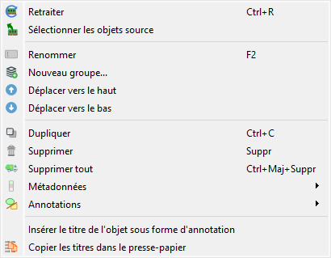
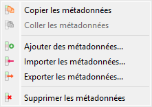
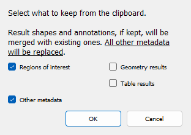
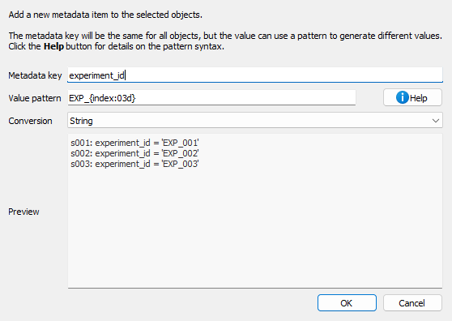
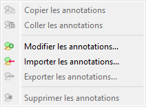

Manipuler les métadonnées et les annotations#
Cette section décrit comment manipuler les métadonnées et les annotations dans DataLab.
Les métadonnées du signal contiennent diverses informations sur le signal ou sa représentation, telles que les paramètres d’affichage, les régions d’intérêt (ROIs), l’historique de la chaîne de traitement, les résultats d’analyse et toute autre information que vous avez pu ajouter aux métadonnées d’un signal (ou qui provient du fichier du signal lui-même).

Capture d’écran du menu « Édition ».#
Le menu « Édition » vous permet d’effectuer des opérations d’édition classiques sur le signal ou le groupe de signaux actuel (créer/renommer un groupe, déplacer vers le haut/vers le bas, supprimer le signal/le groupe de signaux, etc.).
Comme détaillé ci-dessous, il vous permet également de :
Naviguer et utiliser l’historique de la chaîne de traitement grâce à des actions telles que « Recalculer » et « Sélectionner les objets sources ».
Manipuler les métadonnées et les annotations associées au signal actuel, grâce aux sous-menus « Métadonnées » et « Annotations » qui offrent les fonctionnalités suivantes.
Recalculer#
L’action « Recalculer »  vous permet de recalculer le signal (ou les signaux) sélectionné(s) en utilisant leurs paramètres de traitement d’origine. Cela est utile lorsque vous souhaitez réexécuter la chaîne de traitement qui a été utilisée pour créer un signal, par exemple après avoir modifié les paramètres globaux ou les dépendances.
vous permet de recalculer le signal (ou les signaux) sélectionné(s) en utilisant leurs paramètres de traitement d’origine. Cela est utile lorsque vous souhaitez réexécuter la chaîne de traitement qui a été utilisée pour créer un signal, par exemple après avoir modifié les paramètres globaux ou les dépendances.
Cette action actualise également les résultats d’analyse (statistiques, FWHM, centroïde, détection de pics ou de contours, etc.) à partir de leurs paramètres enregistrés. Les résultats d’analyse ne sont pas recalculés automatiquement lorsque vous modifiez une région d’intérêt, les données ou les propriétés de l’objet : les résultats existants restent inchangés jusqu’à ce que vous déclenchiez explicitement cette action, vous laissant ainsi un contrôle total sur le moment où les analyses sont actualisées.
Note
Cette action n’est disponible que pour les signaux disposant de paramètres de traitement enregistrés (signaux créés par des opérations de traitement) ou de paramètres d’analyse enregistrés (opérations d’analyse exécutées précédemment sur ceux-ci).
Sélectionner les objets sources#
L’action « Sélectionner les objets sources »  vous permet de sélectionner l’objet (ou les objets) sources qui ont été utilisés pour créer le signal actuellement sélectionné. Cela aide à retracer l’historique de traitement et à comprendre quels signaux d’origine ont été utilisés comme entrée pour le résultat actuel.
vous permet de sélectionner l’objet (ou les objets) sources qui ont été utilisés pour créer le signal actuellement sélectionné. Cela aide à retracer l’historique de traitement et à comprendre quels signaux d’origine ont été utilisés comme entrée pour le résultat actuel.
Note
Cette action n’est disponible que lorsqu’un seul signal est sélectionné et que ce signal possède des références d’objets sources.
Métadonnées#

Capture d’écran du sous-menu « Métadonnées ».#
Copier/coller les métadonnées#
Compte tenu du fait que les métadonnées contiennent des informations utiles sur le signal, elles peuvent être copiées et collées d’un signal à un autre en sélectionnant les actions « Copier les métadonnées »  et « Coller les métadonnées »
et « Coller les métadonnées »  dans le menu « Édition ».
dans le menu « Édition ».
Cette fonctionnalité vous permet de transférer ces informations d’un signal à un autre :
Régions d’intérêt (ROIs) : c’est un moyen très efficace de réutiliser la même ROI sur différents signaux et de comparer facilement les résultats de l’analyse sur ces signaux
Résultats de calcul, tels que les positions de pics ou les intervalles FHWM (la pertinence du transfert de ces informations dépend du contexte et revient à l’utilisateur de décider)
Toute autre information que vous avez pu ajouter aux métadonnées d’un signal
Note
Copier les métadonnées d’un signal à un autre écrasera les métadonnées du signal de destination (pour les clés de métadonnées communes aux deux signaux) ou ajoutera simplement les clés de métadonnées qui ne sont pas présentes dans le signal de destination.
Lorsque vous collez des métadonnées, une boîte de dialogue vous permet de sélectionner les catégories de métadonnées à conserver à partir du presse-papiers :

Capture d’écran de la boîte de dialogue « Coller les métadonnées ».#
Importer/exporter les métadonnées#
Les métadonnées peuvent également être importées et exportées depuis/vers un fichier JSON en utilisant les actions « Importer les métadonnées »  et « Exporter les métadonnées »
et « Exporter les métadonnées »  dans le menu « Édition ». C’est exactement la même chose que la fonctionnalité de copier/coller des métadonnées (voir ci-dessus pour plus de détails sur les cas d’utilisation de cette fonctionnalité), mais cela vous permet de sauvegarder les métadonnées dans un fichier et de les importer ultérieurement.
dans le menu « Édition ». C’est exactement la même chose que la fonctionnalité de copier/coller des métadonnées (voir ci-dessus pour plus de détails sur les cas d’utilisation de cette fonctionnalité), mais cela vous permet de sauvegarder les métadonnées dans un fichier et de les importer ultérieurement.
Supprimer les métadonnées#
Lors de la suppression des métadonnées en utilisant l’action « Supprimer les métadonnées »  dans le menu « Édition », vous serez invité à confirmer la suppression des régions d’intérêt (ROIs) si elles sont présentes dans les métadonnées. Après cette confirmation éventuelle, les métadonnées seront supprimées, ce qui signifie que les résultats d’analyse, les ROIs et toute autre information associée au signal seront perdus.
dans le menu « Édition », vous serez invité à confirmer la suppression des régions d’intérêt (ROIs) si elles sont présentes dans les métadonnées. Après cette confirmation éventuelle, les métadonnées seront supprimées, ce qui signifie que les résultats d’analyse, les ROIs et toute autre information associée au signal seront perdus.
Ajouter des métadonnées#
L’action « Ajouter des métadonnées »  vous permet d’ajouter des éléments de métadonnées personnalisés à un ou plusieurs signaux sélectionnés. Cela est utile pour étiqueter les signaux avec des identifiants d’expérience, des noms d’échantillons, des étapes de traitement ou toute autre information personnalisée.
vous permet d’ajouter des éléments de métadonnées personnalisés à un ou plusieurs signaux sélectionnés. Cela est utile pour étiqueter les signaux avec des identifiants d’expérience, des noms d’échantillons, des étapes de traitement ou toute autre information personnalisée.

Boîte de dialogue Ajouter des métadonnées.#
Lorsque vous sélectionnez « Ajouter des métadonnées… » dans le menu Édition, une boîte de dialogue apparaît où vous pouvez :
Clé de métadonnées : Entrez le nom du champ de métadonnées à ajouter
Modèle de valeur : Définissez un modèle pour la valeur des métadonnées en utilisant des chaînes de format Python
Conversion : Choisissez comment stocker la valeur (chaîne, flottant, entier ou booléen)
Aperçu : Voir comment les métadonnées seront ajoutées à chaque signal sélectionné.
Le modèle de valeur prend en charge les espaces réservés suivants :
{title}: Titre du signal{index}: Index basé sur 1 du signal dans la sélection{count}: Nombre total de signaux sélectionnés{xlabel},{xunit},{ylabel},{yunit}: Étiquettes et unités des axes{metadata[key]}: Accéder aux valeurs de métadonnées existantes
Vous pouvez également utiliser des modificateurs de format :
{title:upper}: Convertir en majuscules{title:lower}: Convertir en minuscules{index:03d}: Formater en nombre à 3 chiffres avec des zéros devant
Exemples :
Ajouter l’ID d’expérience : clé=``experiment_id``, modèle=``EXP_{index:03d}``, conversion=chaîne → Crée des métadonnées comme
experiment_id="EXP_001"Ajouter la température de l’échantillon : clé=``temperature``, modèle=``{metadata[temp]}``, conversion=float → Copie la température des métadonnées existantes et la convertit en flottant
Marquer les signaux traités : clé=``is_processed``, modèle=``true``, conversion=bool → Définit
is_processed=Truepour tous les signaux sélectionnés
Annotations#
Les annotations sont des éléments visuels qui peuvent être ajoutés aux signaux pour mettre en évidence des fonctionnalités spécifiques, marquer des régions d’intérêt ou ajouter des notes explicatives. DataLab propose un sous-menu dédié dans le menu « Édition » pour gérer les annotations.

Capture d’écran du sous-menu « Annotations ».#
Copier/coller les annotations#
Les annotations peuvent être copiées d’un signal et collées dans un ou plusieurs autres signaux à l’aide des actions « Copier les annotations »  et « Coller les annotations »
et « Coller les annotations »  . Cela est utile lorsque vous souhaitez appliquer les mêmes marqueurs visuels à plusieurs signaux.
. Cela est utile lorsque vous souhaitez appliquer les mêmes marqueurs visuels à plusieurs signaux.
L’action « Coller les annotations » n’est activée que lorsqu’il y a des annotations dans le presse-papiers (c’est-à-dire après avoir utilisé « Copier les annotations »).
Modifier les annotations#
L’action « Modifier les annotations »  ouvre une boîte de dialogue où vous pouvez afficher, ajouter, modifier ou supprimer des annotations du signal actuel. Cela fournit un moyen visuel de gérer toutes les annotations sur un signal.
ouvre une boîte de dialogue où vous pouvez afficher, ajouter, modifier ou supprimer des annotations du signal actuel. Cela fournit un moyen visuel de gérer toutes les annotations sur un signal.
Importer/exporter les annotations#
Les annotations peuvent être enregistrées et chargées à partir de fichiers JSON (extension .dlabann) à l’aide des actions « Importer les annotations »  et « Exporter les annotations »
et « Exporter les annotations »  . Cela vous permet de :
. Cela vous permet de :
Enregistrer les ensembles d’annotations pour une réutilisation ultérieure
Partager les annotations avec des collègues
Archiver les annotations séparément des données du signal
Appliquer les mêmes annotations à différents signaux au cours des sessions
L’action « Exporter les annotations » n’est disponible que lorsque le signal sélectionné a des annotations.
Supprimer les annotations#
L’action « Supprimer les annotations »  supprime toutes les annotations des signaux sélectionnés. Cette action n’est activée que lorsque les signaux sélectionnés ont des annotations.
supprime toutes les annotations des signaux sélectionnés. Cette action n’est activée que lorsque les signaux sélectionnés ont des annotations.
Note
Les annotations sont stockées séparément des métadonnées et des résultats d’analyse. La suppression des annotations n’affecte pas les ROIs ou d’autres éléments de métadonnées.
Titres des signaux#
Les titres des signaux peuvent être considérés comme des métadonnées du point de vue de l’utilisateur, même s’ils ne sont pas stockés dans les métadonnées du signal (mais dans un attribut de l’objet signal).
Le menu « Édition » vous permet de :
« Ajouter le titre de l’objet au graphique » : cette action ajoutera une étiquette en haut du signal avec son titre.
« Copier les titres dans le presse-papiers »
 : cette action copiera les titres des signaux sélectionnés dans le presse-papiers, ce qui peut être utile pour les coller dans un éditeur de texte ou dans un tableur.
: cette action copiera les titres des signaux sélectionnés dans le presse-papiers, ce qui peut être utile pour les coller dans un éditeur de texte ou dans un tableur.Exemple du contenu du presse-papiers :
g001: s001: lorentz(A=1,σ=1,μ=0,y0=0) s002: derivative(s001) s003: wiener(s002) g002: derivative(g001) s004: derivative(s001) s005: derivative(s002) s006: derivative(s003) g003: fft(g002) s007: fft(s004) s008: fft(s005) s009: fft(s006)